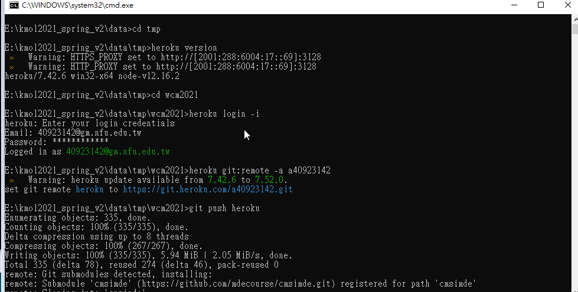

課程進度
進度1
日期2021/3/4
上課內容:創建倉儲
進度2
日期2021/3/11
上課內容:cmsimde新的改版
- 利用 Use this template 按鈕建立倉儲
- http-server.py - 執行後會使用內建的 localhost 與 port 8444 伺服 content 子目錄中的 CMSiMDE 靜態網頁
進度3
日期2021/3/18
上課內容:
網際內容管理程式練習題目
- 學習如何解讀帶有 AJAX 程式架構的網際伺服器內容
- 學習如何利用 Python requests 中的 post 方法, 向伺服器送出表單資料
- 學習如何利用 bs4 解讀 HTML 檔案
- 學習如何利用 Python 程式執行操作系統指令 (os Module)
- 學習如何將網際程式伺服至 Heroku 雲端主機
進度4
日期2021/3/25
上課內容:改版，如何更新cmsimde版本,設putty
進度5
日期2021/4/1
上課內容:設ssh
進度6
日期2021/4/8
heroku設定實作，更改隨身碟 start_ipv6.bat的命令搜尋路徑，之後輸入heroku version如果有回應所使用的版本表示上述路徑設定已經成功,之後設定 heroku 代理主機,確認連上了heroku,以 git 進行提交推送。
